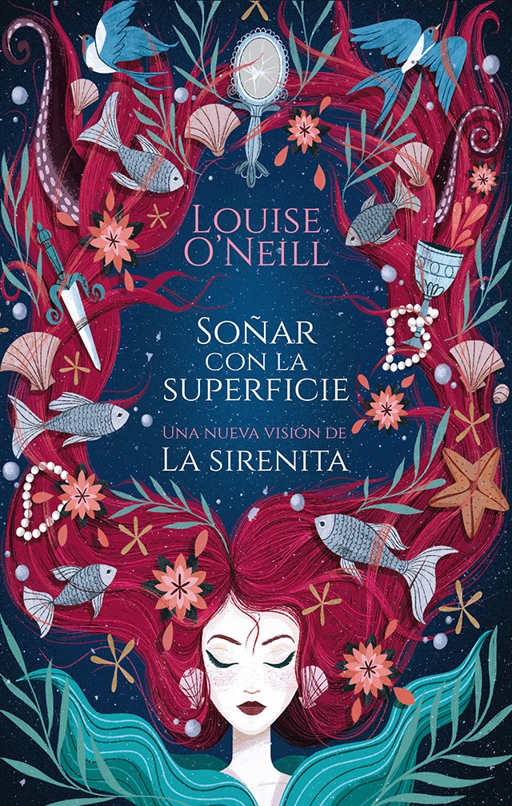

|
|
Este es uno de mis libros favoritos, por su gran enseñanza y sus importantes mensajes,
a pesar de que lo he leído muchas veces no me canso y siempre lloro de impotencia. Nos muestra
la historia de dos adolescentes, Antonio y lucia, quienes lastimosamente pasan por muchas adversidades
y que poco a poco logran superar con la ayuda de una nueva amiga. Lo recomiendo muchísimo.
|
|

|
|
Soñar con la superficie fue uno de los libros que mas me impacto, por su crudeza al contar y
cambiar un cuento de hadas y verlo desde un punto muy realista, este cuento es de la famosa “Sirenita”.
Al mismo tiempo contado para mostrarnos la crueldad del machismo. Aun que no es uno de mis libros favoritos
lo recomiendo por su gran impacto y concientización sobre el valor que tenemos, no solo como mujeres si no
como personas.
|

|
|
Un increíble libro, con simple trama que te engancha muy rápido, nos relata la historia de Cath,
quien se podría decir es “la gemela tímida”, y quien le resulto mas difícil la separación de sus
padres y el estar separada de su hermana en esta nueva etapa. Con ella seremos participes de sus
nuevas aventuras y circunstancias que toda joven pasa. Recomiendo esta grandiosa historia porque sé
que muchos lectores se sentirán identificados con Cath y tal vez a pasado por circunstancias similares.
|